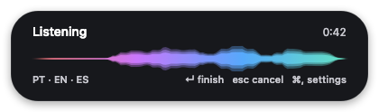
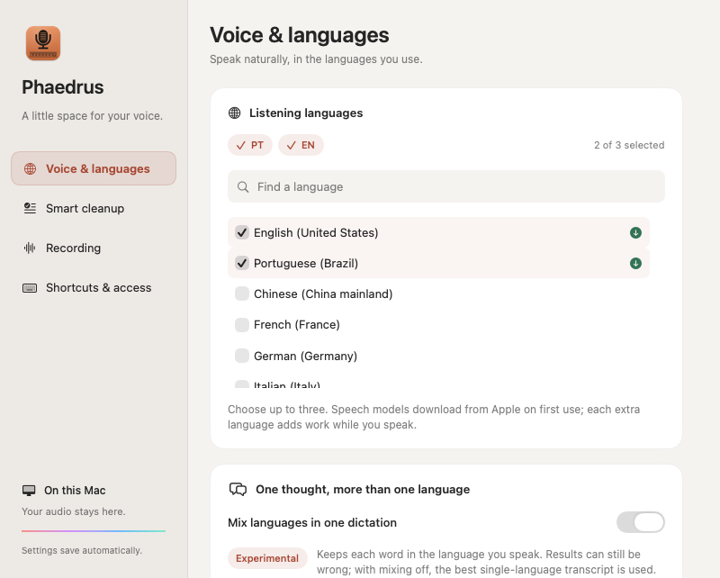
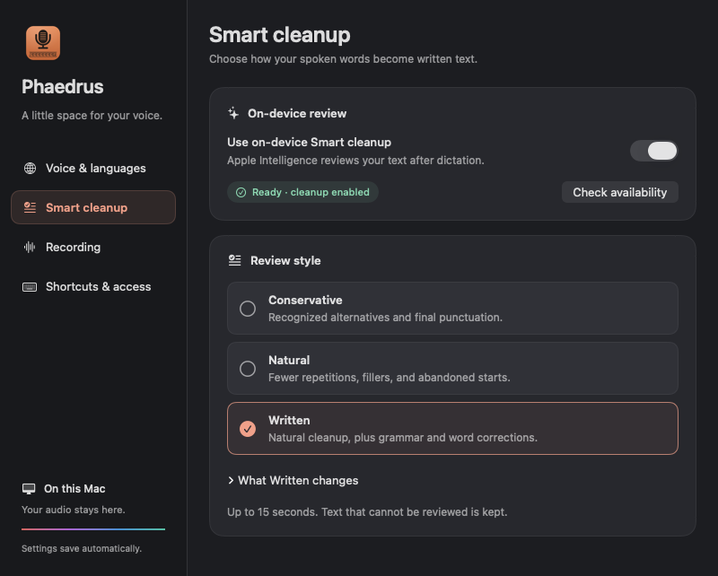

On your Mac.
Apple’s speech models transcribe locally. No cloud transcription, account, or API key.
A little app for macOS
Press a shortcut. Say what’s on your mind.
Your words appear at the cursor, with speech recognition running
entirely on your Mac.
Preciso fazer o deploy hoje, then send the update.

Apple’s speech models transcribe locally. No cloud transcription, account, or API key.
A small floating bubble while you dictate. No Dock icon or menu-bar item taking up space.
Free to use, inspect, and adapt. A small Swift app with an MIT license and no subscription.
New in 0.2.0
More room for language switches, spoken thoughts, and the way you actually work.


From thought to text
Write a message, a note, or the first line of something new.
Phaedrus inserts text through a macOS Service, without asking for Accessibility permission.
Use the microphone key on a compatible keyboard, or choose your own shortcut. English (US) is selected by default.
Three seconds of silence finishes dictation. Press Return or click the bubble to finish sooner; Esc cancels.
Make room for your voice
A small project, ready to try.
Choose the installation that
suits you.
Requires macOS 26+ and Xcode Command Line Tools with the macOS
26 SDK or later. Install the tools with
xcode-select --install.
git clone https://github.com/venzellucas/phaedrus.git
cd phaedrus
scripts/build.sh
open ~/Applications/Phaedrus.app
Builds and installs into ~/Applications. No
administrator rights needed.
For Apple silicon Macs running macOS 26+. Get the published release, ready to install without developer tools.
Download for Apple silicon
Extract the ZIP, quit any running copy of Phaedrus, and move the app to
~/Applications before opening it.
Release notes and checksum.
Not notarized by Apple. These builds use ad-hoc signing. macOS may block the first launch; if you trust the app, follow Apple’s Open Anyway instructions. Managed Macs may restrict this option.
Open Phaedrus to set up your shortcut. Allow microphone access when prompted. The speech model downloads from Apple on first use; after that, recognition runs on your Mac.
It works in apps that accept text through macOS Services. Some apps, including some Electron apps, don’t. Phaedrus also copies the result to the clipboard by default, so you can paste it with ⌘V.
Yes. Open Phaedrus’s settings and choose up to three supported languages. With mixing off, it keeps the best whole-recording transcript. Turn on experimental language mixing to combine recognized words across languages, without translating them. Each extra language adds processing work, and mixed-language results can still be wrong.
Speech recognition happens on your Mac. Phaedrus does not save recordings or transcripts. Smart cleanup also runs locally through Apple Intelligence. The optional clipboard copy stays on this Mac rather than using Universal Clipboard; clipboard managers may still record it. You can turn copying off in settings.
Open Shortcuts & access in Phaedrus and enable “Use the 🎤 key to dictate,” or go to System Settings → Keyboard → Keyboard Shortcuts → Services → Text → Dictate with Phaedrus. During dictation, Return and Esc are handled by Phaedrus. ⌘, pauses and opens settings; while paused, ⌘Return finishes with the words already captured.
Turn off “Use the 🎤 key to dictate” in Phaedrus’s settings before
deleting the app. If you have the source checkout, run
scripts/uninstall.sh to also remove saved
preferences, the Service shortcut, and microphone permission.